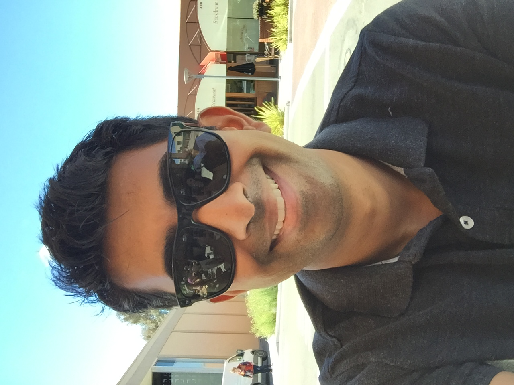

kartik subramanian
kartik subramanian

Hi, I'm Kartik.
I live in San Francisco, by way of Seattle, Corvallis, and Mumbai. I'm a sports addict, foodie, world traveler, amateur photographer, part-time comedian, and all-around nerd. I've spent way too much of my life playing Super Smash Bros and other video games. My wavedash and stop dodge are perfect, but I haven't yet learned to cook. I will never say no to tea and scones. My lifelong dream is to play tennis on a perfectly cut grass court.
What really brings me joy is programming, and I've been doing it for over 15 years. I graduated from the University of Washington with degrees in Computer Science and Electrical Engineering. I currently work at Grand Rounds, with prior stints at One Kings Lane, Amazon and WildTangent. I met the most perfect girl in 2008 and married her in 2013. I have a dog who is heinous but who I love, and the cheekiest and most adorable little boy ever.
I'm always on the lookout for things that are fun and interesting and adventurous. If you're into that sort of thing, send me a note on twitter, facebook, or linkedin. Thanks for stopping by!
background
experience
I implemented SSO at Grand Rounds, working with other medical institutions from across the United States to integrate sign-on functionality. SAML 2.0 was used with an HTTP POST implementation.
At One Kings Lane, I was as a senior engineer before being promoted to an engineering manager. As manager, my team worked to integrate our payment infrastructure with Braintree. On a macro level, we streamlined the team to work in an agile fashion, successfully balanced improving a fragile, legacy architecture while also making significant changes to the core behavior of the system.
As a follow-up, we then took up changing the returns workflow entirely. This required significant changes to the overall workflow, including encapsulating and moving the complex returns logic and integrating with a separate front-end piece to handle internal and external returns generation. This was done while allowing parallel ability to use the existing framework until the business felt comfortable eliminating the old platform completely.
As a senior engineer at One Kings Lane, I helped architect the Inventory Management Platform (IMP). IMP is a platform whose purpose was to take various different sources of inventory owned by diferent pieces of the system and integrate them into one to make it easier for buuyers to better understand the complex inventory position of an imtme. Deliverable included setting up services to publish inventory, coordinate and validate data feeds, consolidate for ingestion, and identify and automatically rectify known error conditions leading to undersell or cancellations.
I worked on the Pricing team at Amazon as the subject matter expert for our retail price publisher, responsible for publishing millions of prices for all items sold on Amazon sites across the world. While at Amazon, I implemented Pre-Order Price Guarantee - technology that identifies price drops and automatically refunds pre-order customers. I also designed and built a real-time distributed system that would consume order messages and generate notifications for items that breached a normal sales rate.
Wild Tangent is a gaming company based in Redmond, WA. My time at Wild Tangent was mostly spent building services. One of my primary projects there was implementing a Captcha library. Wild Tangent is also where I got my first exposure to SOAP: I extended the API of an existing service to verify server availability using asynchronous callbacks. In addition, I upgraded the user management system to a new version of JAX-RPC by generating client stubs from the WSDL. Though short, I really appreciated my time at WildTangent. The people I worked with were incredibly smart and I did my best to learn absolutely everything I could from them.
I worked for a summer at Hewlett-Packard where I was the sole designer and engineer tasked with implementing a model for robust design. The methodology was inspired by a senior engineer and the objective was to build a flexible model capable of being modified over time. The entire project was written in Java, with Swing for the front-end user experience and POJOs on the back end. The model allowed users to have single click ability to dynamically create new modules and links between parameters and functions.
At Oregon State's College of Forestry, I worked with a professor to implement a control system using Data Acquisition Systems Laboratory to operate a kiln for drying wood. The project involved implementing widgets to gather a number of inputs to manipulate various functions of the kiln as it started up and ran. I was able to successfully bring up the new system and deprecate the existing system. I also created a visual interface for an existing Fortran simulation program of lumber drying conditions. Visual Fortran 6.0 and f90SQL were used to interface with Excel using ODBC. This was a very different type of programming than I've done since but it was a lot of fun!
education
contact
© 2017 Kartik Subramanian